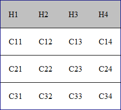

Configuring a Table Cell Row and Column Separator Provider
In a custom framework, the
<table> element has separators between rows. As explained in Configuring Tables, you need to indicate a
method to determine the way rows and columns are separated. If you use the
@rowsep and @colsep cell element attributes, or your table
is conforming to the CALS table model, Oxygen XML Editor can determine the cell
separators. Even if there are no attributes that define the separators, you can still force
a separator between rows by implementing a Java extension.
The init method takes the ro.sync.ecss.extensions.api.node.AuthorElement interface that represents
the XML <table> element as its argument. If the separator information is
implicit, it does not depend on the current table, so you leave this method empty.
However, there are cases (such as the CALS table model) when the cell separators are
specified in the <table> element. In such cases, you should initialize your
provider based on the given argument.
publicvoid init(AuthorElement table) {
}
The getColSep method takes the table cell as its argument. The table layout
engine will ask this AuthorTableCellSepProvider implementation if there is a column
separator for each XML element from the table that was marked as cell in the CSS using the
property display:table-cell. The following example returns false,
meaning there will not be column separators.
/**
* @return false - No column separator at the right of the cell.
*/@Overridepublicboolean getColSep(AuthorElement cellElement, int columnIndex) {
return false;
}
The row separators are determined in a similar manner. This time the example returns
true, forcing a separator between the rows.
/**
* @return true - A row separator below each cell.
*/@Overridepublicboolean getRowSep(AuthorElement cellElement, int columnIndex) {
return true;
}
Note: The complete source code for framework customization
examples can be found in the oxygen-sample-framework module of the Oxygen
SDK, available as a Maven archetype on the Oxygen XML Editor website.
In the example below, the XML document contains the table element:
When the borders for the <td> element are removed from the CSS, the row
separators become visible:
Figure 1. Row separators provided by the Java implementation.

Note: The complete source code for framework customization
examples can be found in the oxygen-sample-framework module of the Oxygen
SDK, available as a Maven archetype on the Oxygen XML Editor website.